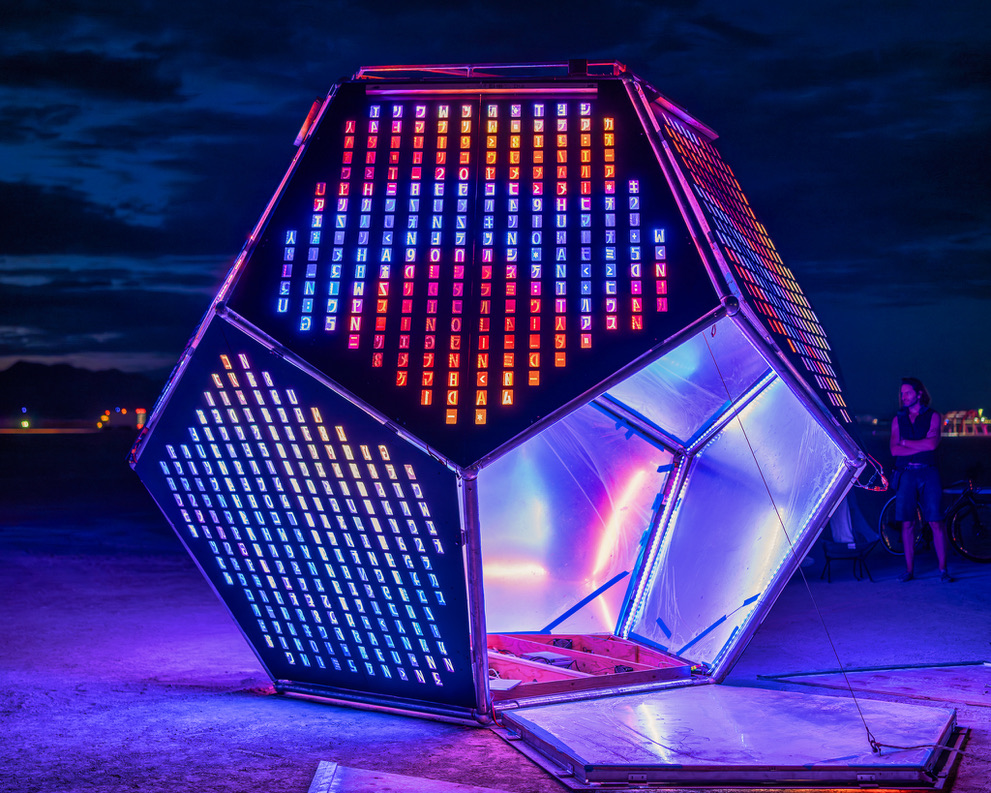
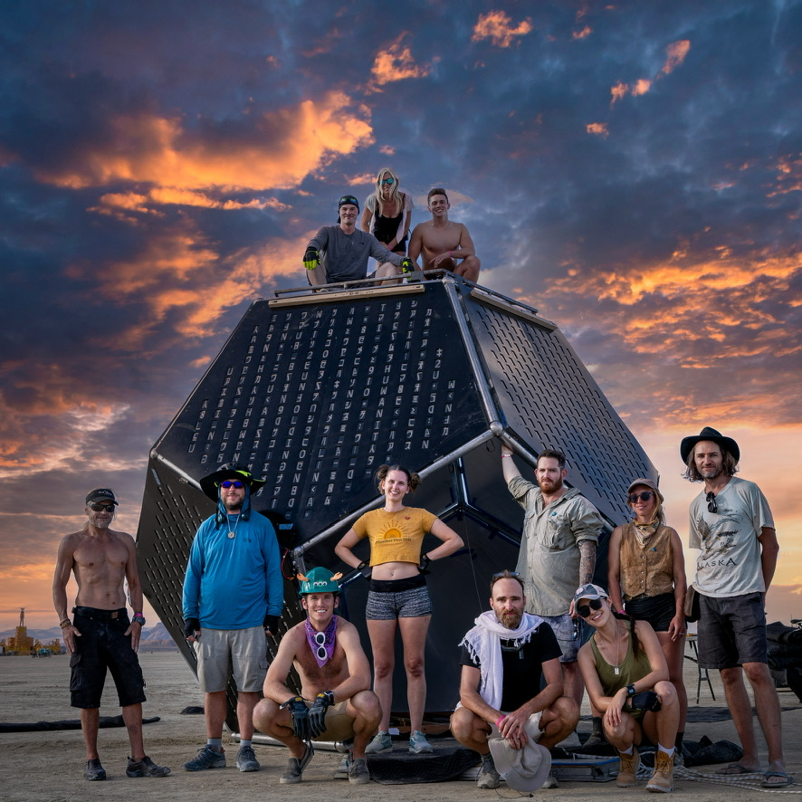
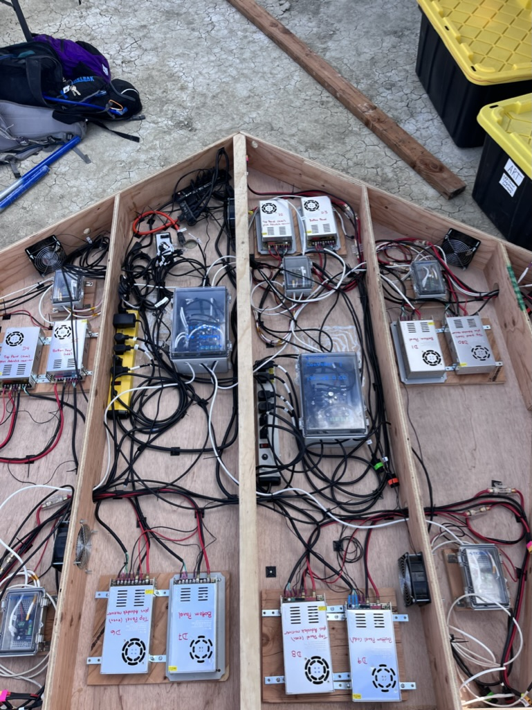
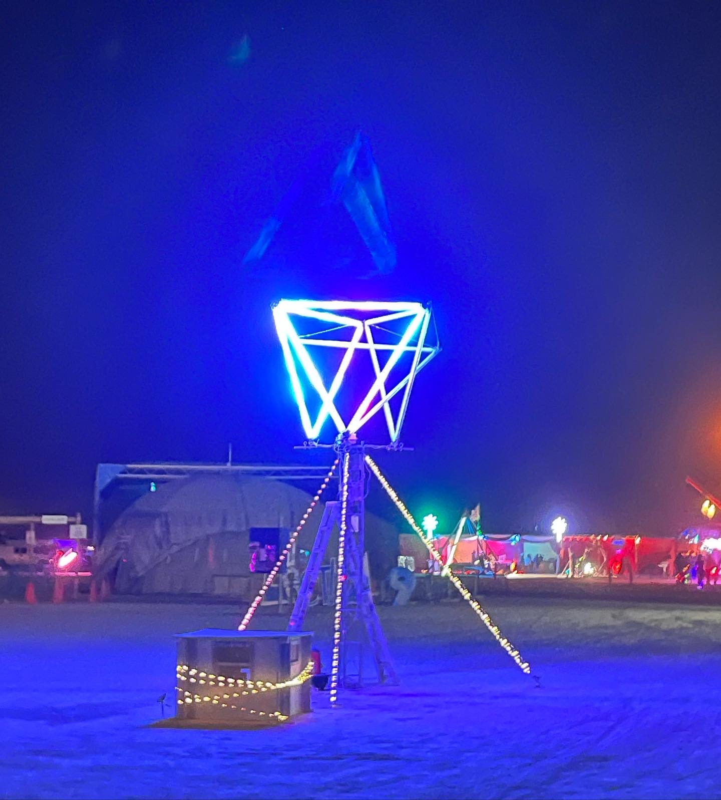
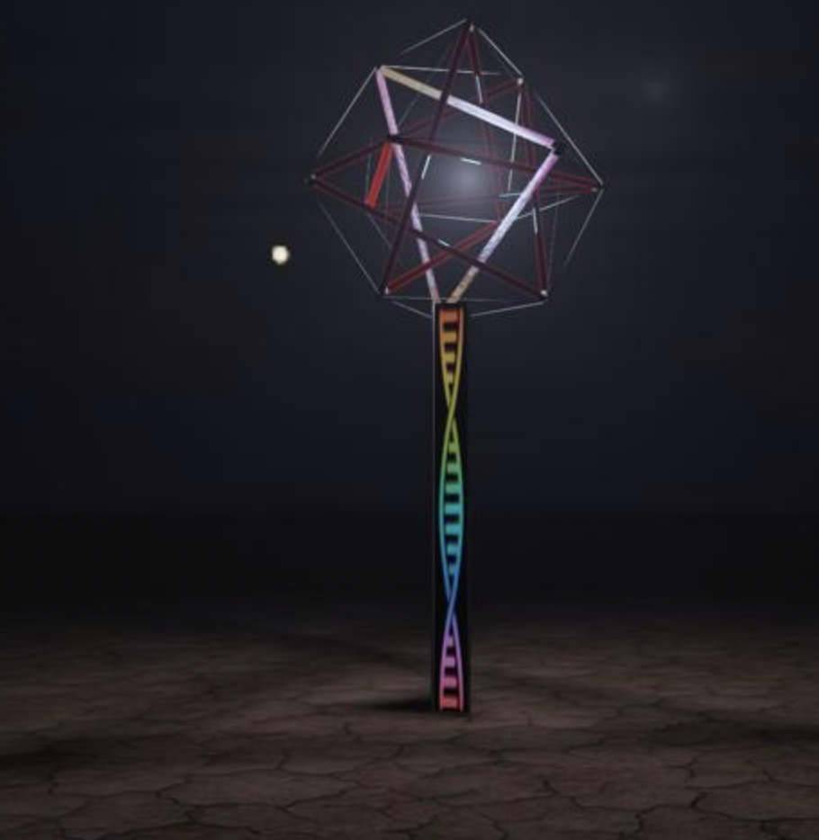
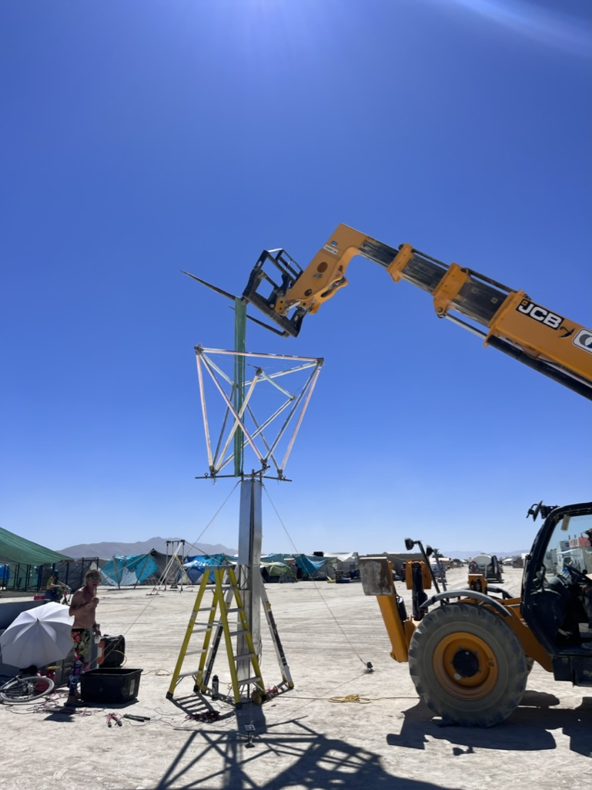

After 5.5 years of Full Stack expereience at Walmart Labs where I built and maintained some of the most popular pages on all of walmart.com ( My Items / Homepage / Category ) for Personalization / My Items Page, Category in Silicon Valley I ventured off to found a venture JT Labs.
It was here with the partnership of Raymond Smets Smets we were able to build out Baking
Jeff Tezos Baker nodes for the Tezos blockchain (average lifecycle reliability > 97.5%).
With a strong foundation in Rust, I was selected the Polkdot Blockchain Academy at UC Berekeley to hone my skills through a Smart Contract & Blockchain Engineering Course within the Polkadot Ecosystem.
Immersive Artist
In my free time I contrinbute my time and energy to two groundbreaking large scale immersive art pieces that showcased at the Burning Man Arts Festival in Black Rock City Nevada.
Unfolding Humanity (Software Engineer)

Final Light Show

Build Team

Advatek Controller & Electrical
Unfolding Humanity, a remarkable 12-foot tall, 30-foot wide, and 2-ton interactive metal sculpture, stands as a profound testament to the delicate interplay between technology and humanity.
My contribution to this project is a testament to the convergence of technology and art that inspires me, with my technical expertise helping transform this concept into a tangible reality.
When closed, the mirrored interior of Unfolding Humanity envelops visitors in an otherworldly experience, evoking a sense of being at the epicenter of the universe.
During this project I developed both a Go code base with modular electrical system as well as mastered a legacy system in C++
Co-Creator: Eukaryote



Eukaryot is a 15 foot tall metal and acrylic sculpture, leveraging the 'tensegrity' principle of construction.
The central tower is steel tri-frame radio strut, anchored to playa at its base and guyed to playa with cables.
Each side of the tower has stencil cut metal facing with the 'dna' design. Animated colored light emits from within.
Tensegrity top is a cuboctahedron made of 2" acrylic tubes, custom 3D printed connectors, and tensioned steel cables.
It is suspended from the top of the tower by 3 steel arms which are bolted to the tower. Each acrylic tube is wrapped in iridescent film, and each contains two linear light bars along its center which animate in fascinating ways
Found Artistry Club (Polkadot Blockchain Academy)
Found Artistry club is a project where by digital creators and immersive artists can meet and collaborate while using NFT art work and blockchain to allow for trustless interaction between parties.
Let's decentrlaize creativity
This project allows for large scale immersive art pieces to act as canveses for digital artists, so the piece of art itself can operate as an atomic network and run / process transactions on chain allowing for a new form of decentralized physical infrastructure